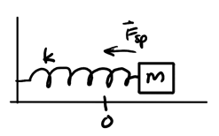
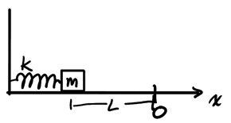
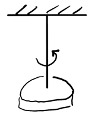
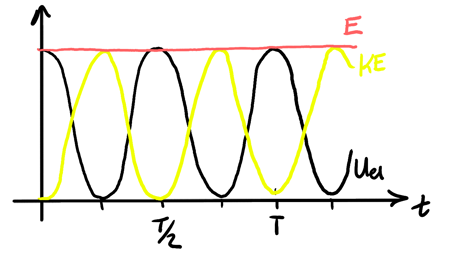

Oscillations
Table of Contents
1. Simple Harmonic Motion
Oscillations are obtained when a system is brought away from equilibrium position and a restoring force or torque exists trying to bring the system back to the equilibrium position.
If the restoring force or torque is proportional to the displacement from the equilibrium position, then the system experiences simple harmonic motion (SHM).
1.1. Canonical Form
Systems that undergo simple harmonic motion can all be described with the canonical form for SHM:
\begin{align} \boxed{\frac{\text{d}^2x}{\text{d}t^2} + \omega^2x = 0} \end{align}where \(\omega\) is the angular frequency in radians per second. Since all systems in SHM can be represented in this form, this leads us to find the following general solution for the position of a system in SHM:
\begin{align} \boxed{x(t) = A\cos(\omega t+\phi)} \end{align}where \(A\) is the amplitude (which must be positive) and \(\phi\) is the phase shift in radians. The angular frequency is given based on which type of system is being analyzed, but \(A\) and \(\phi\) are determined based on initial values of the problem.
1.2. Spring-Mass System
The spring-mass system undergoes SHM due to Hooke's Law, which tells us that the force is proportional to the spring's displacement:

From Newton's 2nd law, we can express the system in its canonical form:
\begin{align} -kx &= m\frac{\text{d}^2x}{\text{d}t^2} \notag \\ \frac{\text{d}^2x}{\text{d}t^2} + \frac{k}{m}x &= 0 \notag \end{align}From this, we see that for a spring-mass system, the angular frequency is:
\begin{align} \omega = \sqrt{\frac{k}{m}} \end{align}Example: Spring-mass system
Consider a block initially at rest after compressing a spring over a length \(L\), after which the system is released:

We want to find the final position of the block as a function of time. From the general solution:
\begin{align} x(t) = A\cos(\omega t + \phi), \: \omega = \sqrt{\frac{k}{m}} \notag \end{align}Now we need to determine \(A\) and \(\phi\) from initial conditions. Since the system starts displaced by \(L\):
\begin{align} x(0) = A\cos\phi = -L \notag \end{align}We also know that the system starts from rest, so taking the derivative to find the velocity gives:
\begin{align} v(t) &= -A\omega\sin(\omega t + \phi) \notag \\ v(0) &= -A\omega\sin\phi = 0 \notag \end{align}Since \(A\) and \(\omega\) are both positive, this means that \(\sin \phi = 0\), giving us two possible values of \(\phi\): \(0\) and \(\pi\). Plugging these back into our first initial value equation, we find that the only solution that makes sense is \(\phi = \pi\) and \(A = L\). Thus, the position as a function of time for this system is:
\begin{align} \boxed{x(t) = -L\cos\left(\sqrt{\frac{k}{m}}t\right)} \notag \end{align}1.3. Torsion Pendulum
The torsion pendulum consists of a system oscillating rotationally, like so:

Its restoring torque can be found from a metaphor with Hooke's Law:
\begin{align} \tau = -\kappa\theta \end{align}where \(\kappa\) is the torsional constant. We can write this in the canonical form by using Newton's 2nd law:
\begin{align} -\kappa\theta &= I\frac{\text{d}^2\theta}{\text{d}t^2} \notag \\ \frac{\text{d}^2\theta}{\text{d}t^2}+\frac{\kappa}{I}\theta &= 0 \notag \end{align}Thus, from the canoncial form, we see that the angular frequency is:
\begin{align} \omega = \sqrt{\frac{\kappa}{I}} \end{align}Note that for angular velocity, use \(\Omega(t)\) as the notation, since \(\omega\) would conflict with angular frequency.
1.4. Energy of SHM
Using the canonical form, we can find the elastic potential energy and the kinetic energy of a system in SHM:
\begin{align} U_{\text{el}} &= \frac{1}{2}kx^2 = \frac{1}{2}kA^2\cos^2(\omega t + \phi) \notag \\ K &= \frac{1}{2}mv^2 = \frac{1}{2}mA^2\omega^2\sin^2(\omega t + \phi) \notag \end{align}Then, we can add these two energies together to get the total mechanical energy of the system:
\begin{align} E = U_{\text{el}} + K &= \frac{1}{2}kA^2\cos^2(\omega t + \phi) + \frac{1}{2}mA^2\omega^2\sin^2(\omega t + \phi) \notag \\ &= \frac{1}{2}kA^2\cos^2(\omega t + \phi) + \frac{1}{2}kA^2\sin^2(\omega t + \phi) \notag \\ &= \frac{1}{2}kA^2\left[\cos^2(\omega t + \phi) + \sin^2(\omega t + \phi)\right] \notag \\ &= \frac{1}{2}kA^2 \notag \end{align}Thus, we find that \(\boxed{E(t) = \frac{1}{2}kA^2}\), which means that we have constant mechanical energy for a system in SHM. When we plot the energy, we have the following graph:

There could also be damping: the dissipation of mechanical energy. Most of the time, damping is due to some drag force (e.g. air resistance) \(F_D = -bv\).